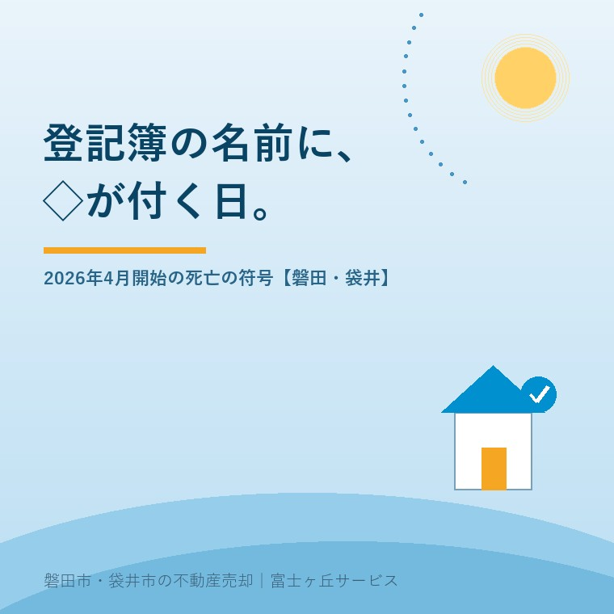

2026年8月15日｜カテゴリ：コスト・税・制度／売却実務

この記事の要点
Q. 実家の登記簿を取ったら、亡くなった父の名前の後ろに「◇」という記号が付いていました。何かの手続きミスでしょうか。うちの家に問題があるということですか。
A. ミスではありませんし、その家に欠陥があるという意味でもありません。令和8年（2026年）4月1日から始まった「所有権の登記名義人についての符号の表示」という制度で、法務局の登記官が職権で付けたものです。根拠は不動産登記法第76条の4。登記官が住民基本台帳ネットワークなどから所有者の死亡情報を得たとき、その氏名に符号を付けて、亡くなっている事実を登記簿の上で分かるようにする仕組みです。申請は要りません。ただし「◇」が付いたからといって、相続登記が済んだことにはならず、令和6年4月から続く相続登記の申請義務（3年以内・10万円以下の過料）はそのまま残ります。そして売却の現場では、登記簿を見た買主・仲介会社・金融機関が「この家は相続が終わっていない」と一目で分かるようになりました。隠せなくなった、と言い換えてもいい変化です。磐田市・袋井市・森町では、介護施設の運営から不動産事業を始めた富士ヶ丘サービスのような「介護×不動産」専門の会社に相談するという選択肢があります。
登記簿を取り寄せて、亡くなったお父さまやお母さまの名前を目で追ったとき、その後ろに小さなひし形が付いていた。
「◇」。
今年（2026年）の4月以降、この一文字を見て驚かれる方が確実に増えます。私のところにも「これは何ですか」というご質問がすでに届いています。
結論から言えば、怖い記号ではありません。ただし、実家をこれから売る・貸す・相続するという方にとっては、確実に前提が変わる記号です。
今日は、この符号の中身と、磐田市・袋井市の売却実務に何が起きるかを整理します。内容は2026年8月15日時点で法務省が公表している情報に基づきます。
正式には「所有権の登記名義人についての符号の表示」といいます。所有者不明土地の発生を防ぐための一連の法改正のひとつで、令和8年4月1日に施行されました。
仕組みはこうです。
登記官が、他の公的機関から取得した死亡情報にもとづいて、登記簿に死亡の事実を符号で表示する。
これによって、登記を見れば、その不動産の所有権の登記名義人が亡くなっている事実を確認できるようになる（法務省の説明）。根拠条文は不動産登記法第76条の4、取扱いは令和8年3月27日付け法務省民二第525号の通達で各法務局に示されています。
ポイントは「職権」という言葉です。誰かが申請したから付くのではなく、法務局が自分の判断で付けます。ご遺族が何かをしたわけでも、しなかったわけでもない。気づいたら付いていた、というのが正常な姿です。
ここに、2025年から動き出していたもうひとつの制度がつながります。「検索用情報の申出」です。
法務省・法務局の案内によれば、令和7年4月21日から、所有権の保存・移転の登記を申請する際に、氏名のフリガナ・生年月日・メールアドレスなどの「検索用情報」をあわせて申し出る取扱いが始まりました。すでに登記されている方も、単独で申し出ることができます。
この生年月日が鍵です。氏名と住所だけでは同姓同名を区別できませんが、生年月日まで揃えば、法務局は住民基本台帳ネットワークシステムに定期的に照会をかけて、その人の異動を追えるようになります。
その照会の結果、住所や氏名が変わっていれば「スマート変更登記」として職権で登記を更新し、亡くなっていれば「◇」を付ける。入口はひとつ、出口が2つに分かれている、と理解すると分かりやすいと思います。
住所変更のほうの話は、登記簿の住所が「豊田町」のままの実家の記事に詳しく書きました。あちらは「生きている人の住所」、こちらは「亡くなった人の記録」です。
実務的な形を整理します。
| 項目 | 内容 |
|---|---|
| 付く場所 | 所有権の登記名義人の氏名の後ろ。付記登記として記録される |
| 記号 | 「◇」（ひし形） |
| 対象 | 自然人（個人）である所有権の登記名義人。法人は対象外 |
| きっかけ | 登記官の職権。相続人からの申請は不要 |
| 情報源 | 住民基本台帳ネットワークシステム等から得た死亡・失踪宣告の情報 |
| 意味するもの | 「この名義人は亡くなっている」という事実のみ。誰が相続したかは表示されない |
いちばん大事なのは最後の行です。「◇」は、相続人が誰かを教えてくれません。示しているのは「この登記簿の名義人はもうこの世にいない」という一点だけ。つまり、その先は真っ白なままです。
逆に、亡くなっているのに「◇」が付かない場合もあります。実務の解説では、次のようなケースが挙げられています。
最後から2番目に注目してください。登記簿の住所が古いままだと、そもそも本人と特定できず、符号が付かないことがあります。
これは「付かなくてよかった」という話ではありません。むしろ「法務局から見て、この不動産の所有者が誰なのか分からない状態になっている」という意味です。所有者不明土地予備軍そのもの、ということです。
ここを誤解される方が、必ず出ます。はっきり書いておきます。
符号の表示は、死亡の事実を公示するだけです。相続登記をしたことにはなりません。名義は亡くなった方のまま、何ひとつ動いていません。
法務省の案内によれば、相続登記の申請義務は令和6年4月1日に始まり、相続の開始と所有権の取得を知った日から3年以内に申請しなければならず、正当な理由なく怠ると10万円以下の過料の適用対象になります。施行日より前に発生していた相続も対象で、その場合の期限は令和9年3月31日です。
令和9年3月31日は、来年の3月です。お盆の帰省で「そういえばまだ名義を変えていない」と気づかれたなら、残り時間は7か月半しかありません。
三つの義務化を並べておきます。混ざりやすいので、一度整理してご覧ください。
| 制度 | 施行 | 期限 | 過料 |
|---|---|---|---|
| 相続登記の申請義務化 | 令和6年4月1日 | 知った日から3年以内／施行前の相続は令和9年3月31日 | 10万円以下 |
| 住所等変更登記の義務化 | 令和8年4月1日 | 変更から2年以内／施行前の変更は令和10年3月31日 | 5万円以下 |
| 死亡の符号（◇）の表示 | 令和8年4月1日 | ―（登記官の職権。義務なし・申請不要） | なし |
「◇」の行だけ、性格がまったく違います。これは国民に課された義務ではなく、国が登記簿を正直にしていく作業です。罰則はありません。ただし、その正直さが、売却の現場では効いてきます。
ここからが、不動産屋としての本題です。
不動産の売買では、関係者全員が登記簿を見ます。買主本人、買主側の仲介会社、住宅ローンを出す金融機関、そして司法書士。誰ひとり例外はありません。
その全員に、「この売主は、まだ名義を持っていない」と伝わるようになった。それが今回の変化です。
| 登場人物 | 「◇」を見て何を思うか | 売主に起きること |
|---|---|---|
| 買主 | 「相続でもめていないか」「本当に契約できるのか」 | 契約を急がれる／逆に様子見される |
| 買主側の仲介 | 「決済までに名義が間に合うか」を確認したがる | 相続の進捗を細かく聞かれる |
| 金融機関 | 融資実行日に確実に所有権が移るかを見る | 相続登記完了の見込みを示すよう求められる |
| 司法書士 | 決済当日の登記が組めるかを逆算する | 書類の前倒し着手を促される |
| 買取業者・営業 | 「相続案件だ」と分かる | ダイレクトメールや訪問が増える可能性 |
最後の行を、正直に書いておきます。登記簿は誰でも取れます。手数料さえ払えば、赤の他人でも、あなたのご実家の登記事項証明書を取得できます。「◇」は、相続が発生した不動産を外から探しやすくする側面を確実に持っています。
買取や一括査定の営業が急に増えたと感じたら、この符号が理由かもしれません。慌てて返事をする必要はありません。買取価格の考え方については買取は相場の7割という話の記事を、査定額の作られ方については査定額のからくりの記事をご覧ください。先に相場観を持ってから話を聞く。順番はそれだけです。
悪い話ばかりではありません。実務が速くなる面が確実にあります。
これまで、隣地の所有者が亡くなっているかどうかは、登記簿を見ても分かりませんでした。境界の立会いをお願いしようとして、返事がなくて、そこで初めて「亡くなっていた」と知る。これが日常でした。
「◇」があれば、最初から分かります。「この隣地は相続人を探すところから始まる」と読めるので、測量や境界確定のスケジュールを、はじめから現実的に組めます。境界立会いの話はお盆の境界立会いの記事に書きました。
共有名義の実家も同じです。共有者のうち誰が亡くなっているかが、登記簿の上で見えるようになります。共有の実家の扱いは共有名義の実家の記事をどうぞ。
地域の事情を書きます。
磐田市・袋井市には、戦前・戦後すぐに取得され、そのまま名義が動いていない土地が相応にあります。田畑、山林、旧集落の宅地、そして分家のときに分けた土地。「おじいさんの名義のまま」という実家は、決して珍しくありません。
そういう土地ほど、これから「◇」が付きます。しかも一枚ではなく、何筆にもわたって付きます。
ここでご相談を受けていて多いのが、「うちは何を持っているのか分からない」という状態です。畑が3枚あると聞いていたが実は5枚あった、というのは本当によくあります。この点は所有不動産記録証明制度の記事で扱いました。令和8年2月2日に始まったこの制度で、亡くなった方の名義の不動産を一覧で取れるようになっています。
順番を書いておきます。
「◇」は②の段階に現れる合図です。③から⑤が終わっていないことを、登記簿が代わりに教えてくれている。そう受け取るのがいちばん正確だと思います。
相続人が多い、連絡がつかない、話がまとまらない。3年の期限に間に合いそうにないという場合もあります。
その場合に用意されているのが相続人申告登記です。法務省の説明では、簡易な手続きで基本的な義務を履行できるとされています。相続人のひとりが単独で申し出ることができ、他の相続人の協力は要りません。
ただし、これは名義を移す登記ではありません。「私は相続人です」と申し出るだけで、その不動産を売れるようになるわけではない。過料を避けるための一時しのぎと理解してください。遺産分割がまとまったら、そこから3年以内に改めて登記が必要です。
なお前述のとおり、相続人申告登記がされている不動産には「◇」は付きません。手を打っていることが、登記簿の上でも分かるようになっているわけです。
今日は8月15日。ご実家に集まっておられる方もいらっしゃると思います。
この記事に関して、今日できることは一つだけです。
登記事項証明書を取ってみる。あるいは、権利証（登記識別情報通知）と固定資産税の納税通知書を開いて、名義人の名前を確認する。
名前が、すでに亡くなった方のものだったなら、そこから先の手続きが残っています。権利証が見当たらない場合は権利証が見つからない実家の記事をご覧ください。
そして、ご親族が顔を合わせているうちに「この家、名義は誰のまま？」と口に出しておく。それだけで十分です。相続人が10人に増えていく仕組みについてはお盆の数珠つなぎ相続の記事に書きました。
「◇」は、放っておいた年数の分だけ、静かに増えていきます。そして増えたぶんだけ、次の世代の手間になります。
当社は、磐田市見付で介護施設を運営するところから不動産の仕事を始めました。ご相談の入口は、たいてい「親が施設に入った」「親を看取った」です。
看取りのあと、ご家族が最初に向き合うのは、たいてい役所と金融機関です。登記は、いちばん後回しになります。急がないからです。誰も催促しないからです。
その「誰も催促しない」状態が、今回終わりました。催促するのは人ではなく、登記簿に付いた一文字です。
私たちが目指しているのは「高く売る」だけではなく、「家族が困らない売却」です。介護の見通し、相続の順番、名義と住所の状態。この3つを一度に見られることが、介護から始まった不動産会社の強みだと思っています。
価格の話をする前に事実を整理する道具として、ふじがおか実家カルテを用意しています。名義がどうなっているか分からない段階からご相談いただけます。
登記簿というのは、そっけない書類です。誰がいつ買って、いくら借りたか。それだけが並んでいます。
そこに、人が亡くなったことを示す記号が加わりました。ひし形ひとつ。小さなものですが、「この家には、まだ終わっていない手続きがある」と、静かに伝え続けます。
気づいたときが、始めどきです。お盆の帰り道にでも、思い出していただければと思います。
ふじがおか実家カルテ｜名義の状態から確認できます
「◇」が付く前に、名義を確かめる。
住所をもとに、名義と住所のずれの見立て、相続登記の要否と期限、必要な書類と取得先、道路・農地・建物の状況を整理し、次に何を確認すべきかを1枚にしてお出しします。作成料0円・入力約1分。申込みだけで売却依頼にはなりません。
本記事は2026年8月15日時点で法務省・法務局が公表している情報に基づく一般的な解説であり、個別の登記の取扱いや符号の表示の有無を確定するものではありません。符号が表示されるかどうかは登記所が把握した情報と登記記録との照合結果によるため、亡くなった方の名義であっても表示されない場合があります。相続登記・相続人申告登記の具体的な手続き、必要書類、期限の起算点については司法書士へ、相続税の取扱いは税理士へ、境界の確定は土地家屋調査士へご相談ください。制度の運用は変更されることがありますので、最新の内容は法務省ウェブサイトまたは管轄の法務局（静岡地方法務局）へご確認ください。個別のご相談は当社までどうぞ。

この記事を書いた人：大石浩之（宅地建物取引士）
磐田市・袋井市・森町で「介護×相続×空き家」に特化した不動産売却支援を行う富士ヶ丘サービスの代表取締役・宅地建物取引士。介護施設の運営から不動産事業を始めた経験をもとに、売主とご家族が困らない売却を一件ずつお手伝いしています。プロフィール
磐田市・袋井市・森町の実家じまい・相続空き家相談
固定資産税通知書だけでも相談できます
住所があいまいでも、通知書や写真から名義・道路・農地・残置物の確認順を整理します。カルテ申込またはLINEで状況を送ってください。
富士ヶ丘サービス株式会社／静岡県磐田市見付5789番地1／TEL:0538-31-3308／静岡県知事 (2) 第14083号／代表取締役・宅地建物取引士 大石 浩之